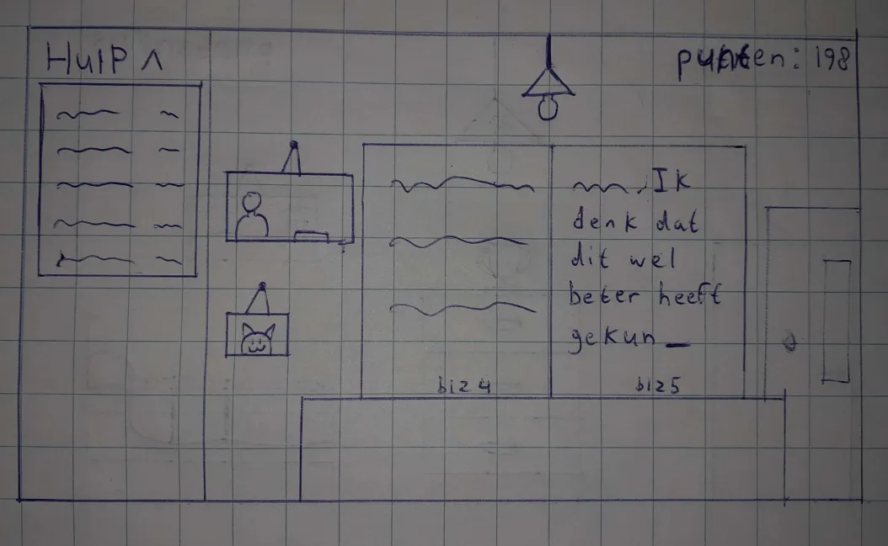
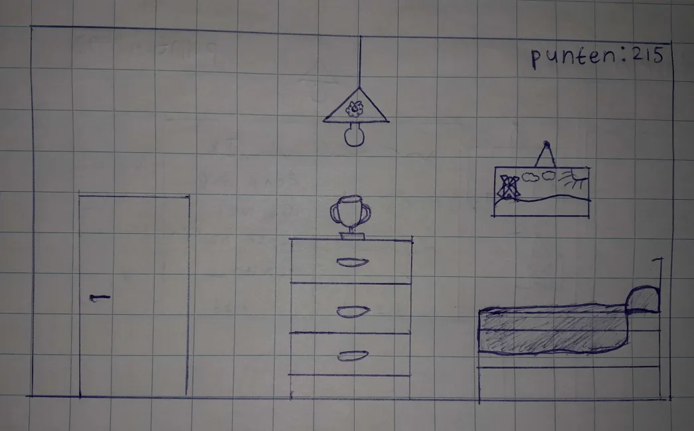
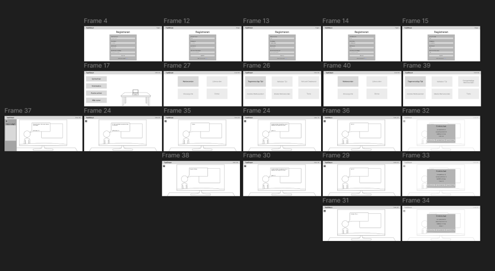
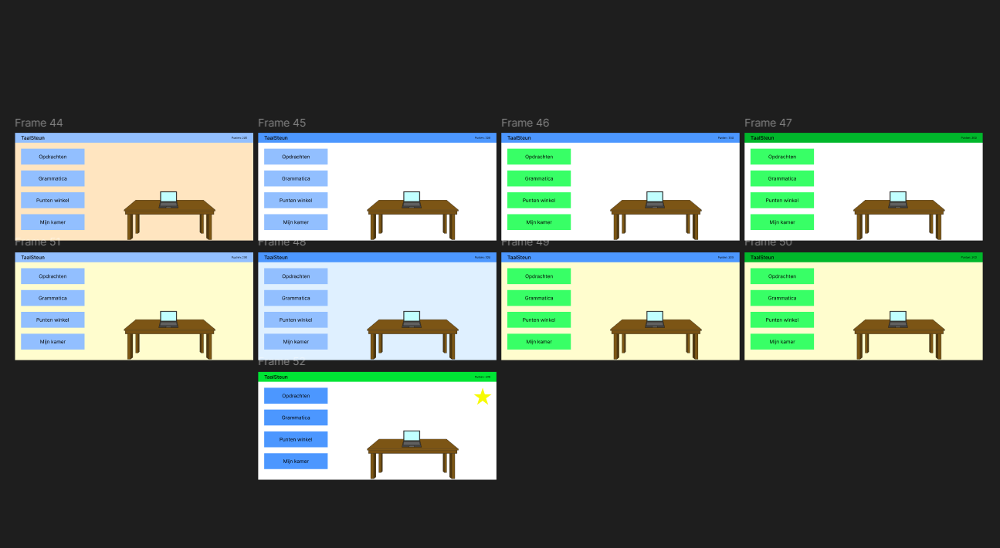
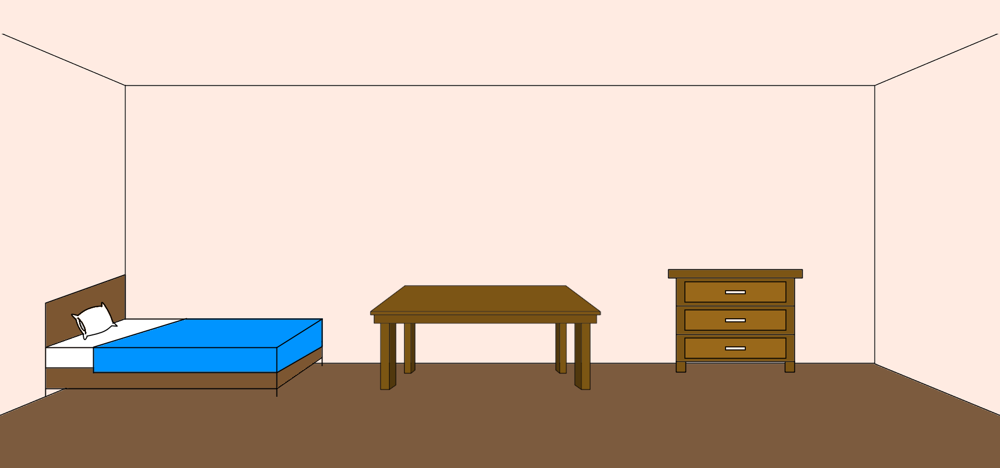
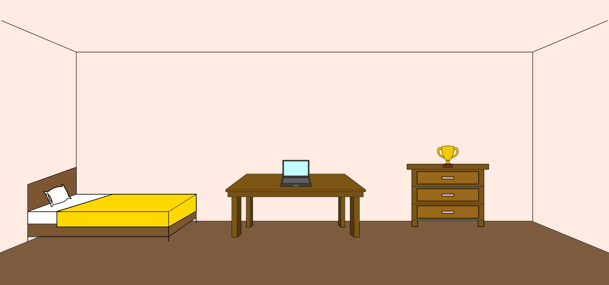
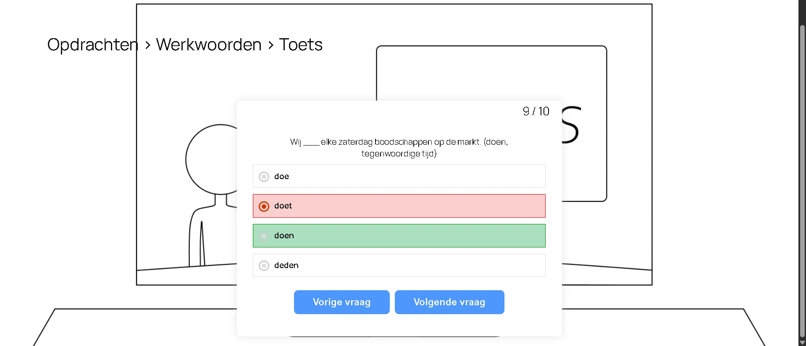

In het begin van het project moest ik kiezen wie mijn doelgroep was en wat ik wilde maken. Ik koos laaggeletterden als mijn doelgroep, omdat die groep het meest interessant klonk om iets voor te maken. Ik wilde een site maken die laaggeletterden helpt met grammatica. Ik deed onderzoek naar laaggeletterdheid en ontdekte dat veel laaggeletterde volwassenen moeite hebben met het schrijven van teksten. Als zij kinderen krijgen, is de kans groot dat hun kinderen ook laaggeletterd worden. Hierdoor ontstaat een vicieuze cirkel die ik wilde doorbreken.
De site die ik wilde maken heet TaalSteun. TaalSteun helpt laaggeletterde volwassenen met het verbeteren van hun grammatica. Gebruikers kunnen opdrachten en toetsen maken en kiezen uit verschillende moeilijkheidsniveaus. Door toetsen te maken, verdienen ze punten die ze kunnen gebruiken om spullen te kopen in de virtuele winkel en hun virtuele kamer te versieren. De site heeft een speelse lay-out om gebruikers gemotiveerd te houden.

Ik gebruikte de Design Sprint methode om na te denken over de navigatie van de site. Daarna maakte ik acht verschillende schetsen. Hierna maakte ik twee concepten: het linker concept toont een scherm waarin de gebruiker opdrachten moet maken, het rechter concept toont een kamer met de spullen die gekocht zijn met de punten.


Daarna maakte ik ontwerpen in Figma, waarbij ik nadacht over de benodigde pagina's en hun lay-out. Ik deed ook een usability test om te onderzoeken of mijn ontwerpen verbeterd konden worden en welke kleuren geschikt waren voor de lay-out.


Na het testen en aanpassen van de ontwerpen, begon ik met WordPress om TaalSteun te bouwen. Ik probeerde eerst de lay-out van mijn ontwerpen na te maken, voegde vervolgens opdrachten toe, en werkte daarna aan het puntensysteem met de MyCred plugin. De virtuele winkel programmeerde ik zelf zodat spullen gekocht konden worden met punten. Daarna ging ik de virtuele kamer maken, en dit was het moeilijkste onderdeel om te programmeren in TaalSteun. De virtuele kamer programmeerde ik helemaal zelf, dus zonder de hulp van de plug-ins van WordPress. De gekochte spullen moesten opgeslagen worden in de database. Er moesten ook meerdere items op het scherm zijn en van hetzelfde object mocht slechts één in de kamer geplaatst worden.
Gelukkig had ik voor het maken van de virtuele kamer een slimme truc bedacht. De kamer, samen met het bed, de kast en de tafel, zijn één afbeelding. De gekochte spullen zijn allemaal losse afbeeldingen die in de kamer worden geplaatst. Die afbeeldingen zijn net zo groot als de hoofdafbeeldingen en zijn ook grotendeels transparant, zodat ook de andere objecten zichtbaar zijn.


Dit was het laatste grote obstakel in mijn weg. Ik kon hierna verder gaan met de opdrachten en toetsen programmeren in TaalSteun. Een tijdje later was TaalSteun af en kon ik het hosten op Bluehost. Als u nieuwsgierig bent naar het eindresultaat, dan kunt u op deze link klikken om de video over TaalSteun te bekijken.
